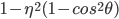

Pathtracer 3-2: Parts 1 & 3
Brandon Shin
<website link here>
First, I implemented the BSDF::reflect() function. Since we were dealing with object coordinates, where we reflect across the normal vector (0, 0, 1), this was just a matter of inverting the x and y coordinates of the input vector. Using this reflect function, I was able to implement MirrorBSDF::sample_f(), which is a delta BSDF. This means that we aren’t actually drawing a random sample, and so we use our reflect function to get the reflection vector wi and set the pdf to 1. Using this reflection vector, we can scale and return the reflectance of the current BSDF correctly.
Implementing refraction was much trickier than reflection. To start, I determined the value of eta, based on the z coordinate of the incoming vector wo. I then checked for total internal reflection, by checking if the expression  is less than 0; if we do have total internal reflection, I just returned false. If not, we use the eta value calculated above, along with the square root of the total internal reflection expression, to come up with our refraction vector wi. Using this refraction vector, along with the quantity eta squared, we can scale down the transmittance of the current BSDF.
Finally, to simulate a glass BSDF, I put together the two previous parts using the pseudocode in the project spec. In the case of total internal reflection, I avoided refraction and just reflected. Otherwise, I calculated the Schlick reflection constant, and using that, probabilistically determined whether this current ray would reflect, or refract. I then returned the corresponding value, scaled by the reflection constant (which also becomes the pdf in this case).
Below are a set of renders taken of CBspheres.dae, with 64 samples per pixel and 4 samples per light, at varying maximum ray depths:
max_ray_depth = 0
Since rays have zero bounces, only the light source itself can be seen (calculated in zero_bounce_radiance).
max_ray_depth = 1
Rays are allowed one bounce, so we can now see the walls of the scene. As for the spheres, we can see the reflection of the ceiling light, since that is shown on the first bounce, but nothing further. The sphere on the left has a MirrorBSDF, so the light is completely reflected. The sphere on the right has a GlassBSDF, where the ceiling light isn’t fully reflected. The gaps are created by the rays that are refracted based on Schick’s reflection coefficient, which haven’t had enough bounces to yield nonzero radiance values.
max_ray_depth = 2
The mirror sphere on the left is already reflecting the scene quite well, since the reflected rays have an additional bounce to return an actual radiance value from the scene. The reflections off of the glass sphere on the right are also visible, but all of our refractive rays have yet to either continue reflecting within the sphere, or refract through the other side of it, to yield a nonzero radiance value. The majority of the rays into the glass sphere seem to be refractive, than reflective, which will become apparent in the next image.
max_ray_depth = 3
Finally, the refraction rays have made it through on the rightmost sphere! The light from the ceiling light is also shining through the sphere, concentrated on the ground under it. The refraction rays have for the most part overpowered the reflection rays in the glass sphere, and we can finally see a relatively clear refracted image through it. On the mirrored sphere, we can see that the glass sphere still appears quite dark; this is because, again, we need one additional bounce for the rays that bounce off the mirror sphere to refract through the glass sphere.
max_ray_depth = 4
Continuing on my point from above, we can now see the glass sphere correctly reflected off of the mirrored sphere. The inside of the glass sphere has some additional noise, and is overall a degree brighter than before; the more internal bounces we have, the more chances for noise and higher-intensity rays to manifest. Note that there is also a slight bright spot on the rightmost blue wall; since the rays that produce this spot are converging at a particular spot, my guess is that either 1) rays from the ceiling light that bounce off the side of the mirror sphere converge through reflection there, or 2) the angle of the ceiling light and the glass sphere create a point of convergence for refraction rays there.
max_ray_depth = 5
This image doesn’t have as many major developments between ray depths as the last few; there is more noise where the bottom of the glass sphere contacts the ground, and the light on the wall seems to have slightly changed shape.
max_ray_depth = 100
This image definitely has more noise than any of the previous ones: the reflection on the glass sphere of the ceiling light is much brighter and fuzzier, and the amount of bright pixels within the glass sphere has increased slightly. However, the light ray convergences seem to be more accurate; the light on the wall has taken a sharper and more definitive shape, and there is a clear distinction between the bottom of the glass sphere, and the bright spot under it, which to me looks more realistic.
Environment lighting allows us to perform lighting simulation of a scene, where the light comes from the environment rather than/along with external lights. This allows for more natural and realistic lighting when dealing with scenes that take place in lit environments, like a house in a field, or a nighttime cafe with street lights shining through the windows. We use HDR environment maps in the form of .exr files to store environmental lighting data that we can access by changing between x-y coordinates and spherical coordinates. This allows us to store 360-degree data on lighting from a particular location.
Here is the probability_debug.png file for the grace.exr file, which I used for all my renders.
… And here is grace.exr in .jpg format.
Here is bunny_unlit.dae, rendered with both uniform and importance sampling with 4 samples per pixel, 64 samples per light.
With uniform sampling, the lights in the scene are barely illuminating the bunny mesh, resulting in a very dark image. There are no clearly defined light spots shining on the bunny, but the image is almost noise-free without the additional lighting calculations.
With importance sampling, the lighting and shadows are greatly improved, at the cost of additional noise. The lighting realism in this picture beats out the uniform sampling image by far, and increasing the number of samples per pixel greatly reduces the noise while keeping the very accurate lighting. Notice the multiple shadows under the bunny, which is a very realistic rendering considering there are several different light sources in this environment.
Here is the same comparison, this time with the dragon.dae mesh file.
With uniform sampling, the dragon is much more well lit than the bunny; I believe this is because there are lights other than the environment lights in this scene, which make up for the weaker lighting achieved with uniform sampling. There is a fair amount of noise in the photo, and the environmental lights’ effects are overshadowed (ha!) by the included light.
With importance sampling, you can again see the multi-shadowing on the dragon’s platform, from both the scene’s light and the environment’s lights. The image is quite bright since there are more lights adding their radiances onto each other, and the noise is about the same as in the uniformly sampled image. This image definitely looks more a part of this environment than the previous image.